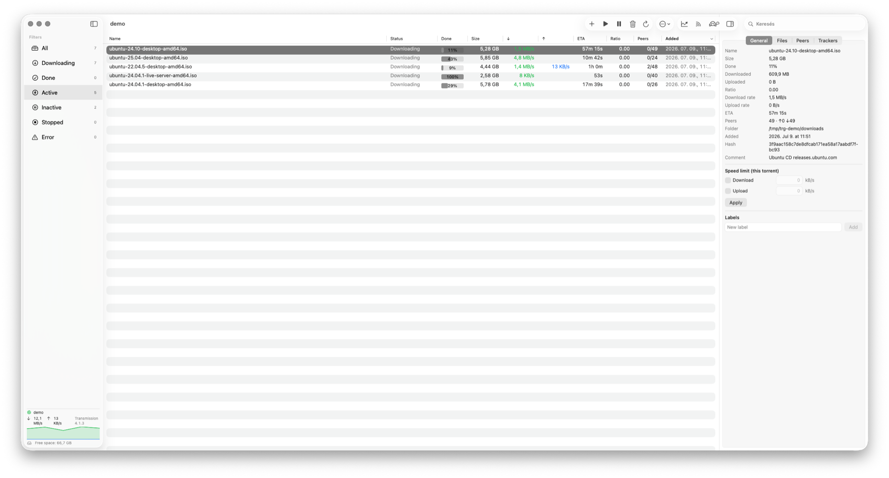

What is Transmission Remote GUI?
Transmission Remote GUI is a free, open-source (MIT) native macOS app that remotely controls a Transmission BitTorrent daemon running on your NAS, seedbox, Raspberry Pi, or home server. It talks to Transmission over its RPC API — so your Mac stays a clean remote control, while the actual downloading and seeding happen on your always-on box. It is a modern macOS torrent client front-end and a drop-in transgui alternative, rebuilt in SwiftUI, adding sequential streaming, RSS auto-download, labels, live speed graphs, a scheduler, and optional mTLS.
Requires: a running Transmission daemon (transmission-daemon) with RPC enabled, and macOS 14 (Sonoma) or later — Apple Silicon or Intel. It does not run the BitTorrent engine itself; that lives on your server.

Features
▶ Sequential streaming download
Transmission 4.1+ — pieces download in order, so you can watch media while it still downloads. No official GUI exposes this.
📡 RSS auto-download
Watched feeds + title-match rules (text or /regex/) → automatic torrent add, with dedup.
🏷 Labels & filters
Tag torrents into categories and filter the list by label from the sidebar.
📈 Live speed graphs
A sidebar mini-chart, a full Statistics panel, and a Stats-app-style menu-bar popover.
⏱ Bandwidth scheduler
Turbo limits on/off by time of day and day of week, plus one-click turtle mode.
🔒 mTLS client certificate
Optional client-certificate authentication per server, for a reverse proxy that requires it.
🚀 Fast & native
NSTableView-backed list handles tens of thousands of torrents; menu-bar icon, hideable Dock icon.
🌐 Bilingual
English and Hungarian, switchable at runtime. Multiple servers, Keychain passwords, auto-connect.
Why Transmission Remote GUI vs. transgui or the web UI
| This app | transgui | Transmission Web UI | |
|---|---|---|---|
| Native macOS (SwiftUI, Retina, dark mode) | Yes | No (Lazarus/GTK) | Browser only |
| Sequential streaming download | Yes | No | No |
| RSS auto-download (regex rules) | Yes | Yes | No |
| Menu-bar popover + Keychain passwords | Yes | No | No |
| Live speed graphs | Yes | Partial | No |
| mTLS / client-cert auth | Yes | No | Depends on proxy |
| License | MIT (free) | GPL (free) | Free |
Install
brew install --cask epaxpax/tap/transmission-remote-gui-macosOr download the latest .dmg. Ad-hoc signed (not notarized): the cask installs without a Gatekeeper prompt; for the .dmg, first launch = right-click → Open.
Set up in 3 steps
1. On your server, enable RPC in Transmission (rpc-enabled, set a username/password). 2. Install this app on your Mac. 3. In the app: Settings → Servers → + → enter the host, port (9091), and credentials → Connect.
FAQ
Is Transmission Remote GUI free?
Yes — completely free and open source under the MIT license. No paid tier, subscription, in-app purchase, or ads.
Do I need a server to use it?
Yes. It is a remote for an existing Transmission daemon (on a NAS, seedbox, Raspberry Pi, or any machine running transmission-daemon with RPC enabled). It does not download torrents on its own — that is by design.
Is it a good transgui alternative for macOS?
It is a native SwiftUI rewrite for Mac. It speaks the same Transmission RPC API as transgui but adds macOS-native features — a menu-bar popover, Keychain passwords, and sequential streaming — that the classic transgui lacks.
Is it safe? Is the app signed?
It is open source (MIT), so every line is auditable. The Homebrew cask installs it without a Gatekeeper prompt; the .dmg is ad-hoc signed (not notarized), so on first launch right-click the app and choose Open.
Does it collect any data?
No personal data. The app talks only to your own Transmission server. This website uses GoatCounter — privacy-friendly analytics, no cookies.
What macOS version do I need?
macOS 14 (Sonoma) or later, on both Apple Silicon and Intel Macs. Sequential streaming additionally needs a Transmission 4.1+ daemon.